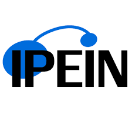
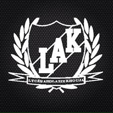

My Academic Journey

2024 – 2025
Research Master’s in Smart Systems
National School of Computer Science (ENSI), Manouba, Tunisia
Specialization: Advanced Intelligent Systems
Focused on AI, ML, Deep Learning, IoT, TALN, and Cyber-Physical Systems.
Completed core and optional modules, plus a research internship, developing skills to design innovative intelligent systems.
2022 – 2025
Engineering Degree in Computer Science
National School of Computer Science (ENSI), Manouba, Tunisia
Specialization: Software Engineering.
Focused on Software Quality & Testing, Big Data, Data Mining, Business Intelligence and Applied Deep Learning.
Gained practical skills in designing and developing complex software solutions.

2020 – 2022
Preparatory Classes in Physics and Technology
Nabeul Preparatory Engineering Institute (IPEIN), Nabeul, Tunisia
Intensive two-year program covering advanced Mathematics, Physics, Chemistry, Computer Science and Engineering Technologies including Mechanics and Automation.
Ranked 49/678 nationally in preparatory engineering entrance examination.

2016 – 2020
Baccalaureate in Technological Sciences
Abd Laziz El Khouja High School, Tunisia
Graduated with highest honors with a score of 16.72/20.
Focused on Mathematics, Physics, Technology, and basic Computer Science.